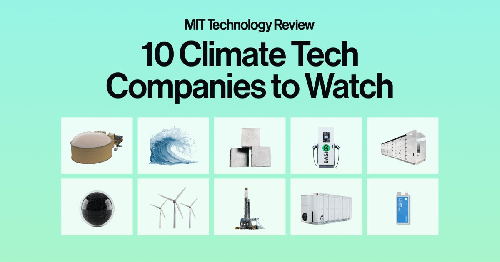

Скачать: 10 климатических технологических компаний для просмотра
Это сегодняшнее издание The Download, нашего ежедневного информационного бюллетеня, который предоставляет ежедневную дозу того, что происходит в мире технологий.
10 климатических технологических компаний, за которыми стоит следить Каждый год MIT Technology Review составляет список самых перспективных климатических технологических компаний в мире.
В этом году ставки повышаются...